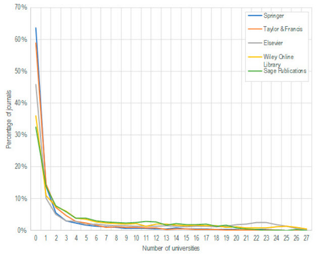

Chapter 7. The Information Economy
Learning Objectives
This chapter aims to get you to consider information as a commodity (something that can be bought, owned and sold) subject to market forces and to reflect on the implications for libraries, information professionals and society at large.
Information in a capitalist system
This section summarizes some of the key elements of Herbert Schiller’s views of the information society, as reported in Webster (2014). Schiller’s perspective, influenced by his economics background and his work as a Professor of Communications, played a central role in the political economy approach to understanding information, which emphasized the importance of “looking behind information” at the structural features that shape the information produced:
If one wants to understand why newspapers and television produce particular content, […] one ought not to start with an analysis of journalists, editors, or scriptwriters [or of the content itself]. Better far to ask: who owns the operation? What are the priorities of the business? Where does it make its money? (Webster, 2014, p. 152)
The political economy approach also emphasizes the importance of considering the capitalist system as a whole, the role of power, control, and interest, and their significance for the information society. Some central points of Schiller’s theory are market principles and practices, corporate capitalism, the commodification of information, and class inequalities.
Market principles and practices
According to Schiller, “the information environment is expressive of the interests and priorities of corporate capitalism” (Webster, 2014, p. 167). The primary purpose of corporations is the generation of profits, which leads to information being produced and made available only if profits can be made. This determines what information will be produced, by whom, for whom, and under what conditions it will be available. Moreover, under corporate capitalism, these decisions tend to be made by a limited number of large corporations that form powerful oligopolies.
The commodification of information
According to Schiller and others, information is increasingly commodified to operate in a market society. This means that information gets to be something one can own, have a price, and be sold or licensed by a party to another (Webster, 2014). For information to exist as a commodity, there needs to be a legal framework that supports it, such as intellectual property law. In Canada, the Copyright Act protects the rights of content producers by granting them exclusive economic rights over their work (Al-Sharieh, 2018). However, the principle of fair dealing allows users to use copyrighted information without permission or payment of royalties. The “dealing” must only be for the following purposes: research, private study, criticism, review, news reporting, education, satire, or parody. Another exception is when a work is reproduced in alternative formats to increase accessibility for people with perceptual disabilities (Al-Sharieh, 2018). This highlights the need for a balance between the rights of the creator and the rights of the user (such as the right to participate in culture or the right to education).
Schiller believed that information should be a public good, an idea that goes entirely against the dominant model. The struggle between the public good and corporate interests is well illustrated in scholarly publishing, which we explore in more detail below.
Class inequalities
Class inequalities also shape how information is produced and distributed, as class can determine what information one has access to. This brings us back to the digital divide from Chapter 3 on information issues. Schiller contends that the information society is one of “information stratification” where some (the minority) are information-rich, and others (the majority, or the “general public”) are information-poor. Furthermore, just like unregulated capitalism naturally leads to monopolies, the natural tendency of this system is to increase the gap between these two groups.
When the ability to profit determines what information you will have access to, the information-poor are those who, by having the ability to pay, end up lumped together in what we call a “mass market” to which a “cheaper” kind of information can be sold without sacrificing profits.
What may be the effect of the dominance of market principles on the information produced, made available, and consumed by the public?
How do you think we can determine the value of information?
Do you think that information should be considered a public good? Why?
Do you think that you are information-poor or information-rich?
Is there anything that we can do as information professionals to help with these issues?
The case academic publishing industry
Academic publishing is a highly profitable industry. Here’s how it works in a nutshell. Universities (funded mainly by students and taxpayers) pay the researchers’ salaries. The researchers ask for more public money to fund their research and hire research assistants, PhDs and postdocs to do research and write a manuscript to report the research and its results. They then submit the findings to a journal managed by an editorial board (all volunteers). One of these volunteers (although there are exceptions, as some editors-in-chief are paid) will recruit two or three additional volunteers to evaluate the submitted manuscript. After two rounds of reviews, the paper will be copy-edited, packaged, and sold back to the universities who already paid the salaries of all the people involved in producing and evaluating the work.
Consider the suggested reading below for a much more detailed and accurate depiction of the industry.
The following article is a compelling account of the publishing industry and its origins.
Buranyi, S. (2017). Is the staggeringly profitable business of scientific publishing bad for science? The Guardian. https://www.theguardian.com/science/2017/jun/27/profitable-business-scientific-publishing-bad-for-science
This one is a bibliometric account of how the digital era led to an increased concentration of the publishing market in the hands of a few publishers.
Larivière, V., Haustein, S., & Mongeon, P. (2015). The Oligopoly of Academic Publishers in the Digital Era. PLoS ONE, 10(6), e0127502. https://doi.org/10.1371/journal.pone.0127502
In principle, a published research article is unique: “each journal has the monopoly on the scientific content of papers it publishes: paper A published in journal Y is not an alternative to paper B published in journal Z” (Larivière et al., 2015). Furthermore, access to published research is crucial for researchers to stay current with the advances in their field and compete in a highly competitive research environment. This allows publishers to increase their prices without influencing demand, leading to hyperinflation of journal subscription prices that deplete academic libraries’ budgets (Shu et al., 2017).
The digitization of academic publishing and journals created an opportunity to reduce the cost associated with publishing and storing scholarly journals. The publishers introduced the journal bundles (the “Big Deal”), which indeed seemed like good deals until the continuous price increase of these bundles led libraries back to square one.
The subscription fees paid by Canadian university libraries to some publishers are reported yearly and are openly available. The latest release of this data can be found in Brin (2021). Here are the subscriptions reported for Dalhousie University for the 2019-2020 fiscal year:
| Product | Price (CA) |
|---|---|
| ScienceDirect-Freedom Collection, incl. Academic Press Collection | $1,539,329.53 |
| Wiley Online Library (Database) | $801,401.41 |
| Taylor & Francis Journals (SSH/S&T/Medical) | $301,280.04 |
| Oxford Journals Online | $125,574.14 |
| Sage Premier All-Access | $118,238.42 |
| Web of Science | $115,703.91 |
| Scopus | $69,254.69 |
| Cambridge Journals Online | $62,628.47 |
| Web of Knowledge | $48,556.76 |
| RSC Electronic Journals | $23,965.30 |
| NRC Research Press Journals | $16,348.20 |
| MathSciNet and Consortium Database Fees | $14,125.01 |
| Total | $3,236,405.88 |
The unsustainable financial situation has led several universities to cancel journal subscriptions. In 2016, the Canadian Research Knowledge Network (CRKN) launched the Journal Usage Project (JUP), a national evaluation of journal usage in universities to help libraries assess the state of their collection and either cancel the big deals or negotiate better prices with publishers. The results of this evaluation shed light on the concentration of journal use in Canadian universities, with almost two-thirds of the journals included in the Springer (now Springer-Nature) being considered essential for none of the universities included in the study.

The full results of the analysis sponsored by CRKN’s Journal Usage Project are reported in the following article:
Mongeon, P., Siler, K., Archambault, A., Sugimoto, C., & Larivière, V. (2021). Collection Development in the Era of Big Deals. College & Research Libraries, 82(2), 219. https://doi.org/10.5860/crl.82.2.219
Open access
Open Access is a movement aiming to make research output freely available online by removing barriers to access, such as subscription prices. The Budapest Initiative (BOAI) initially proposed two main open-access models. The first one, self-archiving (also known as green open access), allows researchers to deposit their already published articles in open electronic archives, also known as repositories. The second one, also known as gold open access, relies on a brand new type of journal that makes new scientific articles immediately available on its website, with no copyright restriction. These new journals would not charge for subscription or access fees. While the original BOAI declaration suggested that these new journals find alternative sources of revenue (such as grants or add-ons that could be sold as an extra), article processing charges (APCs), a publishing fee charged to authors, emerged as one of the primary sources of funding for OA journals. While the open access movement may have seemed like a break away from the commodification of scientific knowledge, the pay-to-publish model turned out to be, once again, an extremely lucrative business for publishers. Butler et al. (2022) estimated that the five largest publishers generated $1.06 billion in revenues from APCs during 2015-2018.
- What role do you academic librarians and other librarians play (or could play) in supporting Open Access to the scholarly literature?
Case study
The gang have all moved on from their entry-level jobs and are starting towards the careers they hoped for while in school. Dante has become a public librarian at Saskatoon Public Library, Jude is working at the Nova Scotia Archives, Tracy is a knowledge management corporate consultant in Montreal’s arts and entertainment sector, and Wren has been promoted at the tech start-up she works for.
Dante and Jude attend a library and archives conference in Lake Como, Italy. The conference party, which takes place on a small, private boat, features many prominent professionals in Information Management.
The air is warm as the two disembark the boat at the end of the night, discussing the conversations. One speaker that resonated with both was Mallory Jensen, an Academic librarian from New York State. She spoke about her work negotiating with publishers to unbundle the academic journals her library purchases so that libraries can save money and only buy the journals their library desires.
Jude: I don’t have to deal with the issues surrounding big academic publishers because I work in archives, but Mallory is passionate about what she does. She shed light on how this is an issue with repercussions for all areas of the library. The budget significantly influences how resources are distributed in library settings!
Dante: You nailed it, Jude. I have met a few academic librarians through these types of conferences who are also frustrated by this issue. It is already so expensive for universities to purchase these journals. It just seems insane to force them to buy ones they don’t even want.
Jude: It really is! And then, on top of that, it’s ludicrous that universities have to buy back the research they’ve already paid their professors to do.
Dante: If only there were a way around it, like if the research could be found online, students and staff could just download and read it for free.
Jude: Arrrrghhhh, I know we just got off a boat, but Dante, you’re talking about piracy! Do you think that’s a fair solution? How can you guarantee that the authors are appropriately compensated if their work is illegally downloaded?
Dante: I guess I never thought about it that way. When there’s a new book I want to read with a long holds list at our library, I usually just go online and try to find a free copy to download. I figure I would be reading it for free through the library anyway, so what difference does it make?
Jude: The difference is that downloading it online is immoral! That is someone’s intellectual property. Waiting for a copy from the library or purchasing it at a bookshop is the right thing to do. You could also buy a copy online.
Dante: But why would I buy a digital copy when it’s so easily accessible for free? How can people be successful selling information online when there’s so much available?
Jude: What about open-access journals? There has been a significant movement towards them. They offer freely accessible content to democratize knowledge but usually charge publication fees to make the work they host publicly available. This remedies the problem of the end-user paying abominable subscription fees, though they carry their own issues. But at least we are moving in the right direction!
Dante: You’re probably right! Speaking of open access, why don’t we just grab an aperitif at that cute little restaurant across the street? It has a beautiful, uncovered patio, and it’s such a warm evening!
Jude: That’s a great idea, oh look! Mallory is sitting with a couple more conference speakers; let’s see if she can offer more insight!
Discussion Questions
Do you agree with Dante or Jude? Do you think that it’s fair for someone to be able to download a PDF of a book for free online when others are purchasing it legally? Why?
What is your opinion on the oligopoly controlling all the academic journals libraries purchase?
Do you think that these journal bundles should be unbundled? Why?
How do we determine value differently on an individual versus collective basis?
Are you able to find your institution’s policy on Open-Access? How can institutional repositories and libraries help facilitate open-access publishing among faculty and students?
Find 1-2 open-access journals online and try to determine how they generate revenue. What are your thoughts on the open-access movement?